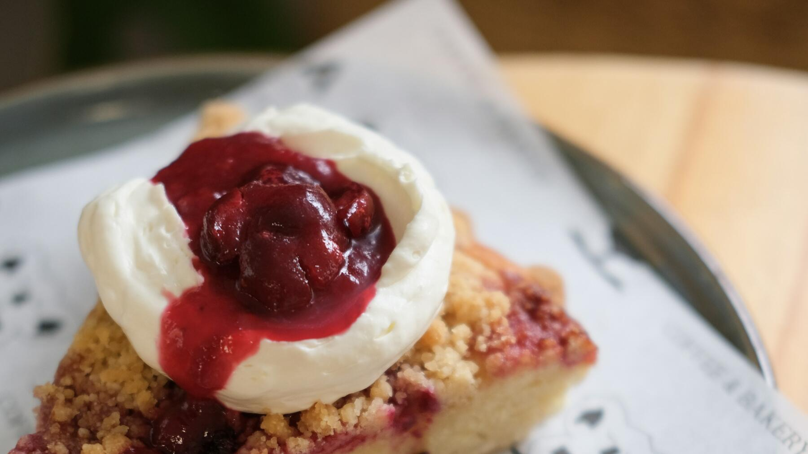

Zurück zur Übersicht
Feuerwehrkuchen
Mürbeteigboden mit Kirschfüllung und knackigen Zimt-Mandel-Streuseln, gekühlt und mit Sahne und Zimt obendrauf. Eine Portion entspricht einem Stück.
- Zeit
- 4 Std.
- Schwierigkeit
- mittel
- Kategorie
- Süßgebäck
- Ernährung
- vegetarisch
Zutaten
Portionen
Für den Mürbeteig
- 200 gMehl
- 100 gButter
- 75 gZucker
- Vanilleextrakt
- 1 PriseSalz
- 1Ei
- 1 MesserspitzeBackpulver
Für die Füllung
- 2 GläserSauerkirschen
- 250 mlKirschsaft aus dem Glas
- 45 gSpeisestärke
- 1 ELZucker
- Bittermandelaroma
Für die Streusel
- 110 gMehl
- 100 gZucker
- 90 gButter
- 100 gMandelstifte
- ½ TLZimt
Für den Belag
- 200 gSahne
- 1 ELPuderzucker
- Vanilleextrakt
- 1 TLSan-apart
- Zimt zum Bestreuen
Zubereitung
- Den Backofen auf 180 °C Ober-/Unterhitze vorheizen. Eine Springform (Ø 24 cm) fetten und mit Mehl ausstäuben.
- Für den Mürbeteig alle Zutaten vermengen und den Teig kalt stellen.
- Für die Füllung die Kirschen abgießen und den Saft auffangen. 250–280 ml davon abmessen und in einem großen Topf mit Stärke, Zucker und Bittermandelaroma mit dem Schneebesen verrühren. Aufkochen lassen, die Kirschen dazugeben, mit dem Kochlöffel verrühren und zum Abkühlen beiseitestellen.
- Für die Streusel alle Zutaten miteinander vermengen.
- Die Springform mit dem kalten Mürbeteig auslegen, ihn mit den Fingern festdrücken und dabei einen kleinen Rand (1,5 cm) hochziehen. Die Kirschfüllung darauf verteilen und glattstreichen. Die Streusel darüberstreuen und etwas andrücken.
- Im vorgeheizten Ofen 30–35 Minuten backen, bis die Streusel Farbe angenommen haben. Den Kuchen komplett in der Form abkühlen lassen und danach mindestens 1 Stunde in den Kühlschrank stellen. Aus der Form lösen und auf eine Tortenplatte setzen.
- Für den Belag die Sahne mit Puderzucker, Vanilleextrakt und San-apart steif schlagen und auf den Kuchen streichen. Mit Zimt bestreuen und kühl servieren.